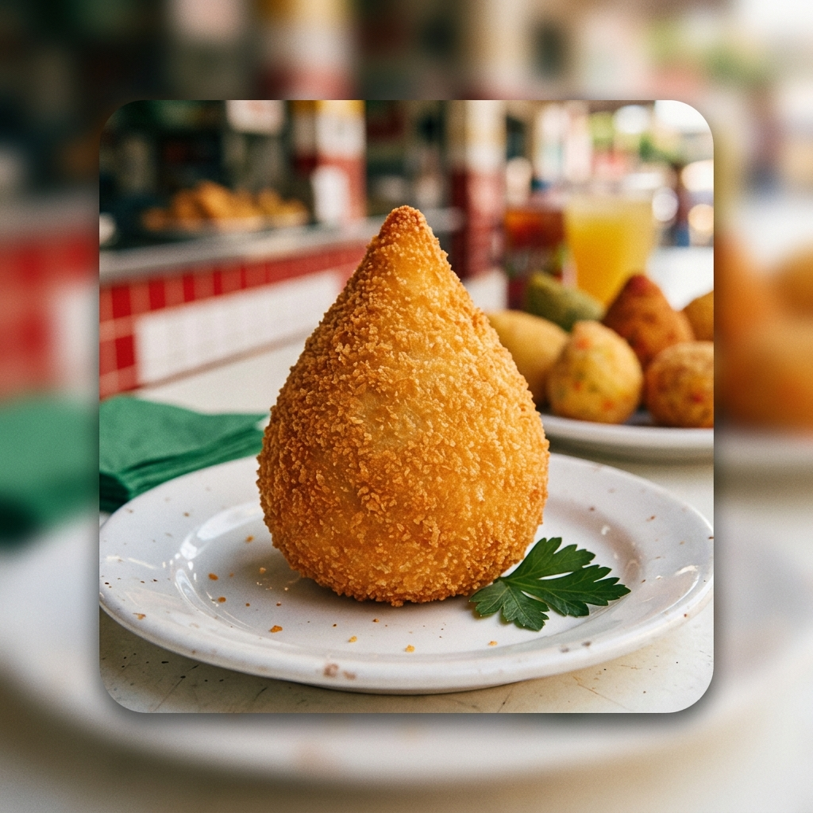
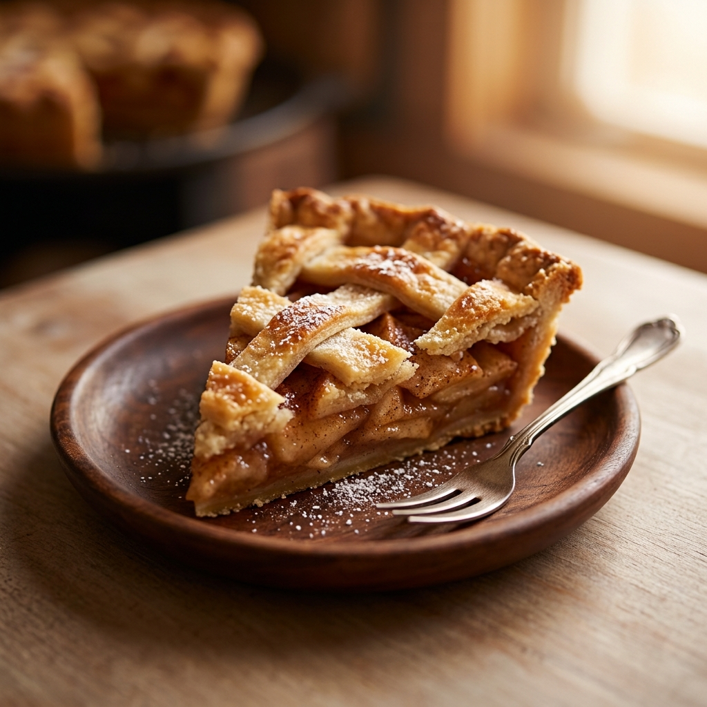
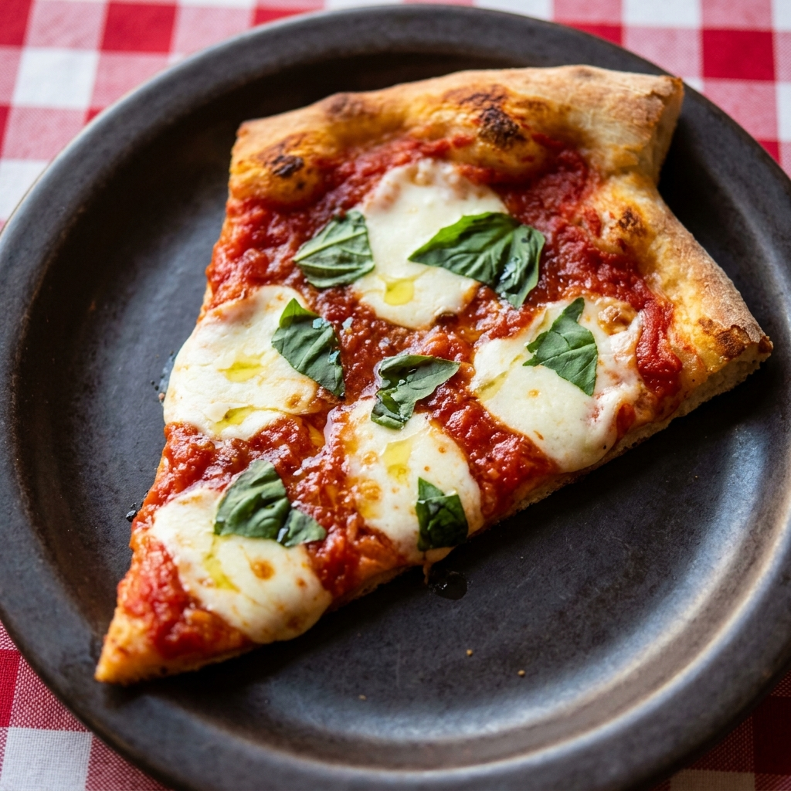

A Origem da Coxinha: Uma Paixão Nacional
Por: Allifer Miguel de Souza
Descubra a história por trás desse salgado amado em todo o Brasil. Diz a lenda que surgiu para agradar a um príncipe... Vamos explorar!
Explorando o fascinante mundo da culinária com Allifer Miguel de Souza

Por: Allifer Miguel de Souza
Descubra a história por trás desse salgado amado em todo o Brasil. Diz a lenda que surgiu para agradar a um príncipe... Vamos explorar!

Por: Allifer Miguel de Souza
Massa quebradiça e recheio suculento. Revelamos as dicas essenciais para criar a sobremesa clássica que conforta o coração e o paladar.

Por: Allifer Miguel de Souza
A história conta que esta pizza clássica foi criada para homenagear a rainha Margherita de Saboia com as cores da bandeira italiana.

Por: Allifer Miguel de Souza
Uma jornada pelos processos que transformam as sementes de cacau em um dos prazeres mais universais. Da colheita à temperagem.

Por: Allifer Miguel de Souza
Explorando a filosofia e as técnicas milenares que tornam o sushi uma experiência gastronômica única, valorizando o ingrediente fresco.

Por: Allifer Miguel de Souza
Moagem, temperatura e tempo de extração: os segredos para desvendar os sabores e aromas complexos do café, um grão cheio de mistérios.